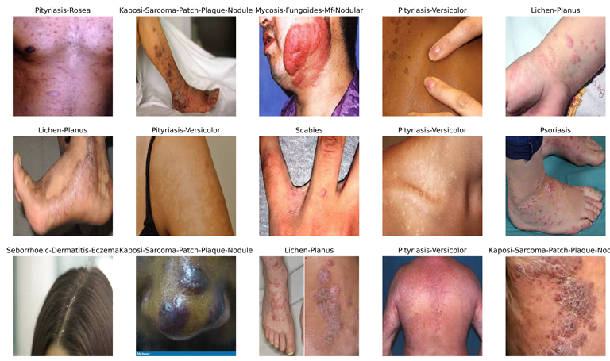
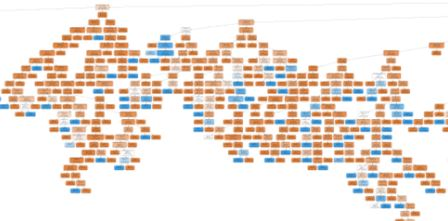
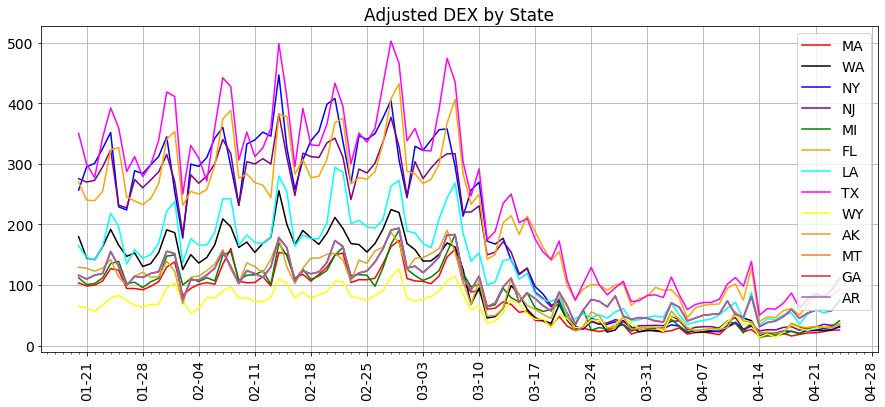

AI in Dermatology
Facilitated process for validation of spot diagnosis of over 2,000 images and used CV2 and clustering models for the creation and classification of a racially inclusive image dataset for identification and diagnosis of skin conditions through machine learning techniques, including generative adversarial networks and auto machine learning.

Predicting Cancellations of Hotel Reservations
Built random forest model, resulting in 81.6% accuracy in predicting cancellations of hotel bookings based on data from over 100,000 hotel reservations, including details on the timing of the reservations and market segment of the guests.

COVID-19 and US State Clustering by Aggregate Smartphone Movement
Used k means and hierarchical clustering algorithms to segment US states by device exposure index, resulting in clusters exhibiting similar aggregate Smartphone movements through commercial spaces for greater understanding of state level exposure and response to shelter-in-place orders
Money and Presidential Nominees for US Ambassador
Examined data set with over 33,000 data points on the qualifications and experience of US career ambassador nominees, nominated between 1981 and 2018, to determine whether there is a statistically significant correlation between the size of personal financial contributions from nominees to their nominating president’s party or campaigns.